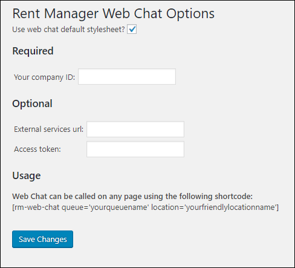

Source: https://rmxhelp.rentmanager.com/Topics/Express/KB/Web-Chat-Plug-In.htm
Set Up Web Chat Plugin
The Web Chat feature allows you to place a chat interface on your website for visitors to initiate a conversation with a live agent. This topic covers adding a web chat plugin to your WordPress website and other non-WordPress websites.
More Information
Before setting up the plugin, you must create a Web Chat Queue, which defines which questions a visitor should be asked, which Rent Manager users may chat with visitors, and general settings. For more information, refer to Add a Web Chat Queue. Additionally, if you wish to use the web chat plugin with a page created with the API, you must be licensed to use web chat. For more information, reach out to your sales representative.
Add Plugin to WordPress Website
After creating a queue, you (or your website developer) must configure the plugin in your WordPress settings. To add a plugin to your WordPress website, do the following:
-
Download the plugin at cdn.rentmanager.com/WebChat/plugin/wordpress/v1/rmwebchat.zip.
The file is automatically saved to your downloads folder. -
In a web browser, login to your WordPress site and navigate to Plugins.
-
Click Add New.
-
Click Upload Plugin.
-
Select the downloaded web chat plugin zip file, and click Install Now.
-
In the Rent Manager Web Chat section, click Activate.
The RM Web Chat Settings display in the Settings section of the left panel. -
Click RM Web Chat Settings.

-
Enter information into the following fields:
Field Description Use web chat default style sheet?
When selected, the web chat form appearance is supplied by Rent Manager.
More Information
Unless you are working with a developer who can add custom styling to the form, leave this option checked. If unchecked, the form pulls from existing styles from your WordPress theme, and most themes do not have styling in place for the web chat.
Your Company ID
The Company Code for the database which should receive the chat requests from visitors to your site. Your Company Code, located at the top of your Rent Manager Express page.
External services URL
An optional URL that is used to connect to external services. By default, this is a production URL, but in a development or quality assurance environment this can be changed to map to external services or locally.
Access token
If using the optional External services URL, enter a valid token with web chat privileges.
More Information
For most users, the External service URL and Access token fields are not used during the setup.
-
Click Save Changes.
-
Copy the following shortcode. Required values are red.
[rm-web-chat queue='yourqueuename' location='YourFriendlyLocationName'].
-
Navigate to the page in the WordPress Admin panel where the web chat is located and paste the shortcode into the appropriate location. Replace the default values with the following information.
Default Value Description 'yourqueuename'
The name of the Web Chat queue you wish to use.
'yourfriendlylocationname'
The specific Rent Manager location from which you would like to conduct web chats.
-
Click Update to save your changes.
Add Plugin to Other Types of Websites
Before you can add a web chat plugin to a non-WordPress website, you first need set up the plugin and configure the options for how it works on your website.
Plugin Setup
To set up the web chat plugin on your website, do the following:
-
Reference the following required CDN in your file.
<script type="text/javascript" src="https://cdn.rentmanager.com/WebChat/plugin/js/v1/WebBasedChatWizard.js"></script>.
-
Include the following CSS to add default styling to the form. The form will also pull from your site's built-in styles.
<link rel="stylesheet" type="text/css" href="https://cdn.rentmanager.com/WebChat/plugin/css/v1/WebBasedChatWizard.css"/>.
-
Include the following link to Microsoft's ASP.NET SignalR. Microsoft hosts this link. Therefore, it may change without notice.
<script type="text/javascript" src="https://ajax.aspnetcdn.com/ajax/signalr/jquery.signalr-2.2.2.min.js"></script>.
-
Include the following link to Font Awesome (v5 or higher) CSS files. Font Awesome hosts this link. Therefore, it may change without notice.
<link rel="stylesheet" type="text/css" href="https://use.fontawesome.com/releases/v5.3.1/css/all.css"/>.
-
Create a <div> or other HTML element for your form with any class or ID, such as in the following example. The web chat form will be generated inside of this element.
<div class="rmWebChatContainer"></div>.
-
Add one of the following options variable to your JavaScript with any name. The following options are passed in a single object, upon initialization of the web chat plugin. Required options are noted in red. Additionally, each option has a default value of N/A.
Option Name Description and Default Function COMPANYCODE
The name of your database, which will be used when connecting to the Rent Manager API. Your Company Code, located at the top of your Rent Manager Express page.
Location
The specific location from which you would like to pull and submit queue information.
QueueName
The name of the queue where you wish to direct visitors to your site. This corresponds to the established web chat queue in Rent Manager. You can have multiple web chat instances on your website, each using a different queue.
InitialName
The name of the visitor who initialized the chat. If Name is also a question in the queue, the name the visitor submitted populates in the Name field, and the visitor may change it before submitting the web chat request.
InitialEmailAddress
The email address of the visitor who initialized the chat. If Email Address is also a question in the queue, the email address the visitor submitted populates in the Email Address field, and the visitor may change it before submitting the web chat request.
InitialPhoneNumber
The phone number of the visitor who initialized the chat. If Phone Number is also a question in the queue, the phone number the visitor submitted populates in the Phone Number field, and the visitor may change it before submitting the web chat request.
InitialPropertyName
The property of the visitor who initialized the chat. If Property is also a question in the queue, the property the visitor submitted populates in the Property field, and the visitor may change it before submitting the web chat request.
InitialUnitName
The unit of the visitor who initialized the chat. If Unit is also a question in the queue, the unit the visitor submitted populates in the Unit field, and the visitor may change it before submitting the web chat request.
More Information
Use the following example to guide your script. Text in red denotes where you information should be inserted.
var rmWebChatOptions = {
ENTID: "YOURCOMPANYCODE",
Location: "Default",
QueueName: "YOURQUEUE",
}
-
In your script, initialize the form using the code below. Use the class, ID and options that you specified above.
$('.rmWebChatContainer').WebBasedChatWizard("initialize", rmWebChatOptions);.